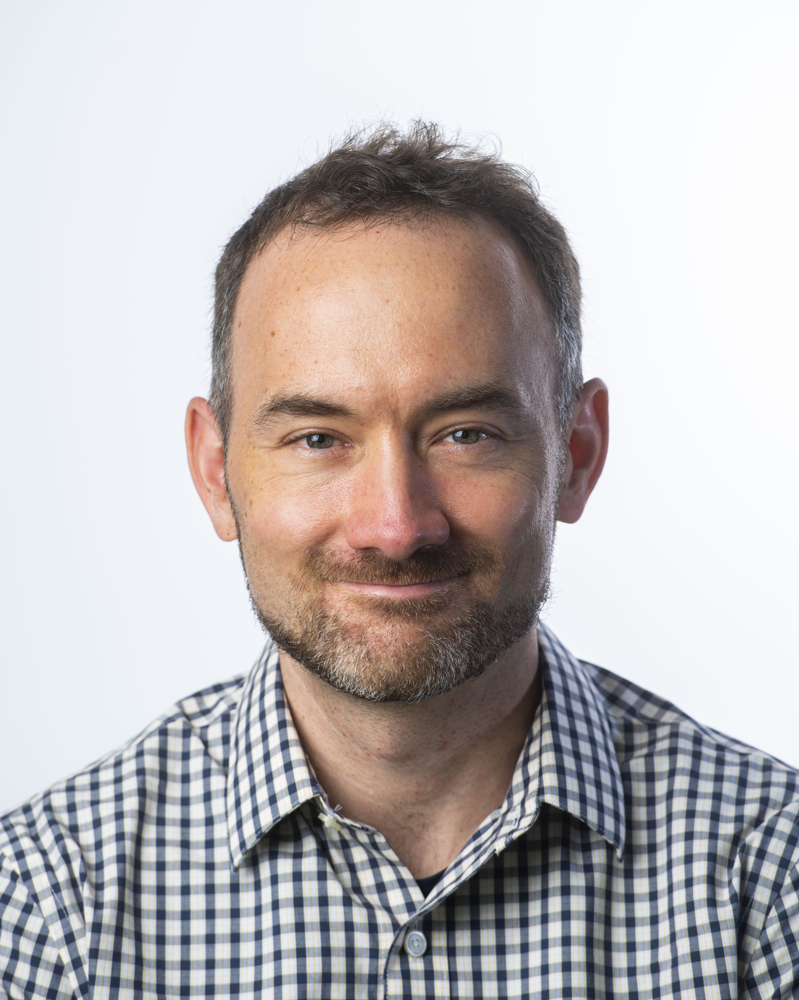

Prof. Doug Downey
Directior at Allen Institute for AI and Professor Northwestern University
Title: Deep Research Systems for Science: Challenges and Opportunities
Time: 9:10 - 9:50 am
Abstract: AI has tremendous potential for accelerating science---helping users access the literature, execute experiments, analyze data, and more. In this talk, I will present Ai2 ScholarQA, a "deep research" long-form question answering system from the Allen Institute for AI that forms an early step toward a comprehensive AI-powered scientific assistant. While the system performs well according to automated metrics and human feedback, I’ll discuss how realizing AI’s full potential for long-form QA will require tackling several unsolved challenges. These range from evaluation, to obtaining supervision at scale, to new methods for providing personalized and proactive assistance.
Bio: Doug Downey is Senior Director of Semantic Scholar Research at the Allen Institute for AI and a Professor of Computer Science at Northwestern University. His research focuses on natural language processing and human-computer interaction, with the goal of developing AI systems and methods that help scientists do their work more effectively. He has received paper awards at ACL, EMNLP, IJCAI, and AKBC, as well as an NSF CAREER award, election to the DARPA Computer Science Study Group, and a Microsoft New Faculty Fellowship.
Time: 9:10 - 9:50 am
Abstract: AI has tremendous potential for accelerating science---helping users access the literature, execute experiments, analyze data, and more. In this talk, I will present Ai2 ScholarQA, a "deep research" long-form question answering system from the Allen Institute for AI that forms an early step toward a comprehensive AI-powered scientific assistant. While the system performs well according to automated metrics and human feedback, I’ll discuss how realizing AI’s full potential for long-form QA will require tackling several unsolved challenges. These range from evaluation, to obtaining supervision at scale, to new methods for providing personalized and proactive assistance.
Bio: Doug Downey is Senior Director of Semantic Scholar Research at the Allen Institute for AI and a Professor of Computer Science at Northwestern University. His research focuses on natural language processing and human-computer interaction, with the goal of developing AI systems and methods that help scientists do their work more effectively. He has received paper awards at ACL, EMNLP, IJCAI, and AKBC, as well as an NSF CAREER award, election to the DARPA Computer Science Study Group, and a Microsoft New Faculty Fellowship.

Prof. Graham Neubig
Associate Professor at the Carnegie Mellon University and Chief Scientist at All Hands AI
Title: LLM Agents that Learn from Experience
Time: 9:50 - 10:30 am
Abstract: In this talk I will discuss how LLM agents can learn from their past experiences, specifically in the context of web agents. Specifically, I will discuss two different varieties of methods to do so. First, I will discuss agent workflow memory, an online learning method that takes the agent’s past experiences and references them in future tasks. Second, I will discuss methods of using and inducing APIs in agent-based learning, demonstrating that agents with APIs can outperform those who perform web tasks directly, and discuss methods of inducing reusable APIs from past experiences.
Bio: Graham Neubig is an associate professor at the Language Technologies Institute of Carnegie Mellon University and Chief Scientist at All Hands AI. His research focuses on natural language processing and large language models, including both fundamental advances in model capabilities and applications to tasks such as software development. His final goal is that every person in the world should be able to communicate with each-other, and with computers in their own language. He also contributes to making NLP research more accessible through open publishing of research papers, advanced NLP course materials and video lectures, and open-source software, all of which are available on his web site.
Time: 9:50 - 10:30 am
Abstract: In this talk I will discuss how LLM agents can learn from their past experiences, specifically in the context of web agents. Specifically, I will discuss two different varieties of methods to do so. First, I will discuss agent workflow memory, an online learning method that takes the agent’s past experiences and references them in future tasks. Second, I will discuss methods of using and inducing APIs in agent-based learning, demonstrating that agents with APIs can outperform those who perform web tasks directly, and discuss methods of inducing reusable APIs from past experiences.
Bio: Graham Neubig is an associate professor at the Language Technologies Institute of Carnegie Mellon University and Chief Scientist at All Hands AI. His research focuses on natural language processing and large language models, including both fundamental advances in model capabilities and applications to tasks such as software development. His final goal is that every person in the world should be able to communicate with each-other, and with computers in their own language. He also contributes to making NLP research more accessible through open publishing of research papers, advanced NLP course materials and video lectures, and open-source software, all of which are available on his web site.

Dr. Yunyao Li
Director of Machine Learning at Adobe Experience Platform
Title: Building & Querying Enterprise Knowledge Bases: From Declarative Languages to GenAI
Time: 11:30 - 12:05 pm
Abstract: Over the last 25 years -- search, knowledge graph and even large language model innovations have been adopted by consumers much before enterprises. The delay in adoption of such technologies in enterprises is largely due to two factors. First, enterprise knowledge bases vary widely based on industry verticals and even within an industry vertical by organization-specific terminology and vocabulary. Second, querying such knowledge bases needs to account for very low-tolerance enterprise users have for mistakes and hallucination. In this talk I will describe tools to build, maintain and query such knowledge bases and the evolution of these tools over two decades. Specifically, the talk will focus on enterprise systems we have been involved in building, ranging from declarative information extraction / entity resolution & programmable search to opinionated chain-of-thought reasoning using large language models and entity linking. I will explain these systems using examples from enterprise search, legal, financial and customer experience applications.
Bio: Yunyao Li is a Director of Machine Learning at Adobe Experience Platform, where she leads strategic initiatives to bring the power of Generative AI and Knowledge Graph to enterprise systems. Previously, she was the Head of Machine Learning at Apple Knowledge Platform. Prior to Apple, she was a Distinguished Research Staff Member and Senior Research Manager at IBM Research - Almaden. Yunyao is an ACM Distinguished Member. She is particularly known for her work in enterprise natural language processing, enterprise search, and database usability. In these areas, she has published over 100 peer-reviewed articles, been granted 36 patents, created and taught multiple graduate-level courses, and co-authored two books. She was a member of NAACL Executive Board from 2022-2024. She received her undergraduate degrees from Tsinghua University, and her master’s and Ph.D. degrees from the University of Michigan - Ann Arbor.
Time: 11:30 - 12:05 pm
Abstract: Over the last 25 years -- search, knowledge graph and even large language model innovations have been adopted by consumers much before enterprises. The delay in adoption of such technologies in enterprises is largely due to two factors. First, enterprise knowledge bases vary widely based on industry verticals and even within an industry vertical by organization-specific terminology and vocabulary. Second, querying such knowledge bases needs to account for very low-tolerance enterprise users have for mistakes and hallucination. In this talk I will describe tools to build, maintain and query such knowledge bases and the evolution of these tools over two decades. Specifically, the talk will focus on enterprise systems we have been involved in building, ranging from declarative information extraction / entity resolution & programmable search to opinionated chain-of-thought reasoning using large language models and entity linking. I will explain these systems using examples from enterprise search, legal, financial and customer experience applications.
Bio: Yunyao Li is a Director of Machine Learning at Adobe Experience Platform, where she leads strategic initiatives to bring the power of Generative AI and Knowledge Graph to enterprise systems. Previously, she was the Head of Machine Learning at Apple Knowledge Platform. Prior to Apple, she was a Distinguished Research Staff Member and Senior Research Manager at IBM Research - Almaden. Yunyao is an ACM Distinguished Member. She is particularly known for her work in enterprise natural language processing, enterprise search, and database usability. In these areas, she has published over 100 peer-reviewed articles, been granted 36 patents, created and taught multiple graduate-level courses, and co-authored two books. She was a member of NAACL Executive Board from 2022-2024. She received her undergraduate degrees from Tsinghua University, and her master’s and Ph.D. degrees from the University of Michigan - Ann Arbor.

Dr. Hongming Zhang
Senior Research Scientist at Tencent AI Lab
Title: From RAG to Proactive Agents
Time: 12:05 - 12:40 pm
Abstract: In this talk, I will begin by exploring the connection between retrieval-augmented generation (RAG) systems and LLM-based agent systems through the lens of state perception. I will then introduce a theoretical framework for designing proactive agent systems capable of functioning as “autopilots.” Following this, I will introduce several key challenges in building such proactive agents and present practical solutions to overcome them. Finally, I will conclude with a discussion of open questions and future directions in this emerging research area.
Bio: Hongming Zhang is currently a researcher at Tencent AI Lab in Seattle, where he focuses on developing self-evolving large language model (LLM) agents. His recent research interests include proactive agent system design, world modeling for agent reinforcement learning, perspective-aware information retrieval, and efficient tree search algorithms for reinforcement learning.
Time: 12:05 - 12:40 pm
Abstract: In this talk, I will begin by exploring the connection between retrieval-augmented generation (RAG) systems and LLM-based agent systems through the lens of state perception. I will then introduce a theoretical framework for designing proactive agent systems capable of functioning as “autopilots.” Following this, I will introduce several key challenges in building such proactive agents and present practical solutions to overcome them. Finally, I will conclude with a discussion of open questions and future directions in this emerging research area.
Bio: Hongming Zhang is currently a researcher at Tencent AI Lab in Seattle, where he focuses on developing self-evolving large language model (LLM) agents. His recent research interests include proactive agent system design, world modeling for agent reinforcement learning, perspective-aware information retrieval, and efficient tree search algorithms for reinforcement learning.
Prof. Yoav Artzi
Associate Professor at Cornell Tech
Title: Ad-hoc Common Ground Construction / Pre-training to Externalize Knowledge
Time: 14:20 - 14:55 pm
Abstract: This talk describes two distinct projects. The first focuses on ad-hoc adaptation in interactions, where partners implicitly and gradually form shared knowledge as referential conventions. This human practice allows interlocutors to increase the efficiency and effectiveness of their interaction. We observe that LLMs do not spontaneously display this capability, and design a post-training process to significantly improve this ability. The second part of the talk focuses on how LLMs conflate factual knowledge and language skills. I will describe how to pre-train LLMs to externalize factual knowledge. The product of this process is LMLMs (Large Memory Language Models), a class of models that naturally integrates an explicit external knowledgebase into its inference. LMLMs show substantial reduction in model size and improvements in factual precision.
Bio: Yoav Artzi is an Associate Professor in the Department of Computer Science and Cornell Tech at Cornell University and arXiv's associate faculty director. His research focuses on language modeling and learning in interactive and situated scenarios. He received an NSF CAREER award, and his work was acknowledged by awards and honorable mentions at ACL, EMNLP, NAACL, and IROS. Yoav holds a B.Sc. from Tel Aviv University and a Ph.D. from the University of Washington.
Time: 14:20 - 14:55 pm
Abstract: This talk describes two distinct projects. The first focuses on ad-hoc adaptation in interactions, where partners implicitly and gradually form shared knowledge as referential conventions. This human practice allows interlocutors to increase the efficiency and effectiveness of their interaction. We observe that LLMs do not spontaneously display this capability, and design a post-training process to significantly improve this ability. The second part of the talk focuses on how LLMs conflate factual knowledge and language skills. I will describe how to pre-train LLMs to externalize factual knowledge. The product of this process is LMLMs (Large Memory Language Models), a class of models that naturally integrates an explicit external knowledgebase into its inference. LMLMs show substantial reduction in model size and improvements in factual precision.
Bio: Yoav Artzi is an Associate Professor in the Department of Computer Science and Cornell Tech at Cornell University and arXiv's associate faculty director. His research focuses on language modeling and learning in interactive and situated scenarios. He received an NSF CAREER award, and his work was acknowledged by awards and honorable mentions at ACL, EMNLP, NAACL, and IROS. Yoav holds a B.Sc. from Tel Aviv University and a Ph.D. from the University of Washington.

Prof. Manling Li
Assistant Professor at Northwestern University
Title: From Large Language Models to Large Agent Models: Reasoning Agent with World Knowledge
Time: 14:55 - 15:30 pm
Abstract: Large Language Models have demonstrated remarkable capabilities in reasoning tasks, but the emerging field of Large Agent Models faces unique challenges as these models learn to interact with dynamic environments. This talk explores the fundamental framework for understanding and improving agent decision-making across long-horizon multi-round interactions. We begin by formalizing agent reasoning as a Markov Decision Process (MDP) and introduce the Embodied Agent Interface, a standardized framework for studying core agent capabilities including goal interpretation, subgoal decomposition, action sequencing, and transition modeling. Through this lens, we identify long-horizon decision making as a critical bottleneck that requires specialized training approaches. To address this challenge, we present RAGEN, a novel framework that is inspired by the recent success of DeepSeek-R1(Zero) using rule-based reward in reinforcement learning. RAGEN tackles two key challenges in real-world agent scenarios: environmental non-deterministic reward and long-horizon multi-turn interactions. By reformulating the problem as a Partially Observable Markov Decision Process and introducing the StarPO algorithm, RAGEN optimizes complete trajectory distributions rather than single-turn responses. This approach enables more robust learning in complex agentic scenarios with long-horizon interactions.
Bio: Manling Li is an Assistant Professor at Northwestern University. She was a postdoc at Stanford University and obtained the PhD degree in Computer Science at University of Illinois Urbana-Champaign in 2023. She works on the intersection of language, vision, and robotics. Her work won the ACL’24 Outstanding Paper Award, ACL'20 Best Demo Paper Award, and NAACL'21 Best Demo Paper Award. She was a recipient of Microsoft Research PhD Fellowship in 2021, an EE CS Rising Star in 2022, etc. She served as Organizing Committee of ACL 25, NAACL 25, EMNLP 24, and delivered tutorials about multimodal knowledge at IJCAI'24, CVPR'23, NAACL'22, AAAI'21, ACL'21, etc. Additional information is available at https://limanling.github.io/.
Time: 14:55 - 15:30 pm
Abstract: Large Language Models have demonstrated remarkable capabilities in reasoning tasks, but the emerging field of Large Agent Models faces unique challenges as these models learn to interact with dynamic environments. This talk explores the fundamental framework for understanding and improving agent decision-making across long-horizon multi-round interactions. We begin by formalizing agent reasoning as a Markov Decision Process (MDP) and introduce the Embodied Agent Interface, a standardized framework for studying core agent capabilities including goal interpretation, subgoal decomposition, action sequencing, and transition modeling. Through this lens, we identify long-horizon decision making as a critical bottleneck that requires specialized training approaches. To address this challenge, we present RAGEN, a novel framework that is inspired by the recent success of DeepSeek-R1(Zero) using rule-based reward in reinforcement learning. RAGEN tackles two key challenges in real-world agent scenarios: environmental non-deterministic reward and long-horizon multi-turn interactions. By reformulating the problem as a Partially Observable Markov Decision Process and introducing the StarPO algorithm, RAGEN optimizes complete trajectory distributions rather than single-turn responses. This approach enables more robust learning in complex agentic scenarios with long-horizon interactions.
Bio: Manling Li is an Assistant Professor at Northwestern University. She was a postdoc at Stanford University and obtained the PhD degree in Computer Science at University of Illinois Urbana-Champaign in 2023. She works on the intersection of language, vision, and robotics. Her work won the ACL’24 Outstanding Paper Award, ACL'20 Best Demo Paper Award, and NAACL'21 Best Demo Paper Award. She was a recipient of Microsoft Research PhD Fellowship in 2021, an EE CS Rising Star in 2022, etc. She served as Organizing Committee of ACL 25, NAACL 25, EMNLP 24, and delivered tutorials about multimodal knowledge at IJCAI'24, CVPR'23, NAACL'22, AAAI'21, ACL'21, etc. Additional information is available at https://limanling.github.io/.
- © All rights reserved
- Design: HTML5 UP